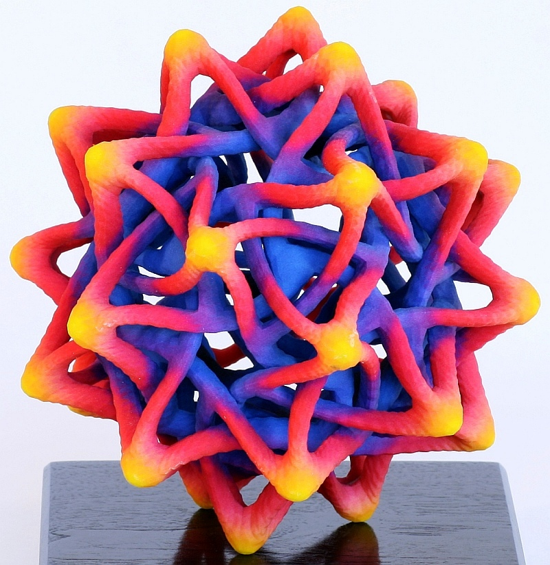
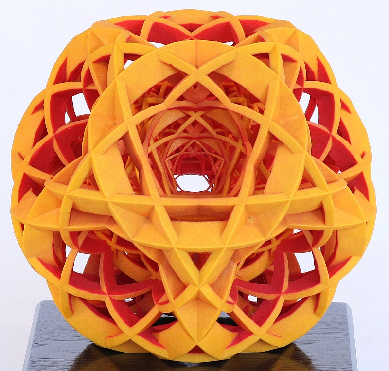
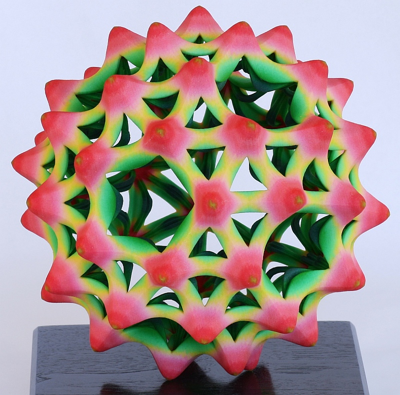
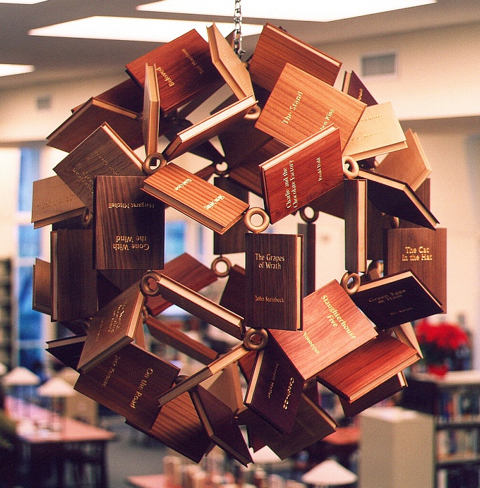
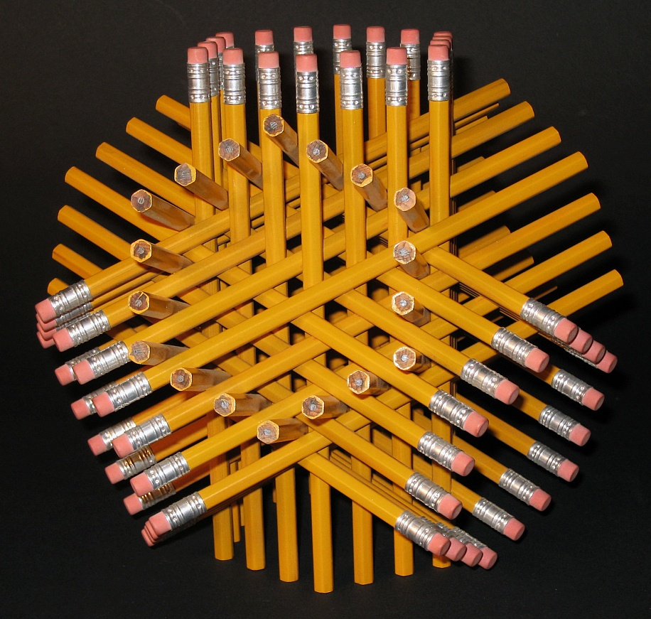

For a Museum of Mathematics fundraiser dinner, He created a series of mathematical table centerpieces. These are each eight inches in diameter and built on the hi-def color ZPrinter model 650 from 3DSystems. They vary in color and style, expressing different mathematical ideas in sculptural form. Some convey an organic sensibility, while others are more geometric.
  The Northport Public Library commissioned him to create a unique Millennium Bookball sculpture for its newly expanded Laurel Avenue building. The work is a spherical assemblage of wooden "books," five feet in diameter, hanging in the two-story catalog area of the library. The books are made of various hard woods, with the titles and authors carved and gold leafed. The sculpture was assembled at a community assembly event something like a barn-raising, but for art.
72 Pencils is a geometric construction of 72 pencils, assembled into a work of art. Restricted to a signed limited edition of twenty-five, each shares a common form, yet each is unique. The form is an arrangement of four intersecting hexagonal tubes that penetrate each other in a fascinating three-dimensional lattice. Each of the sculptures in the edition is constructed with a different type of pencil, so each is a one-of-a-kind object.
